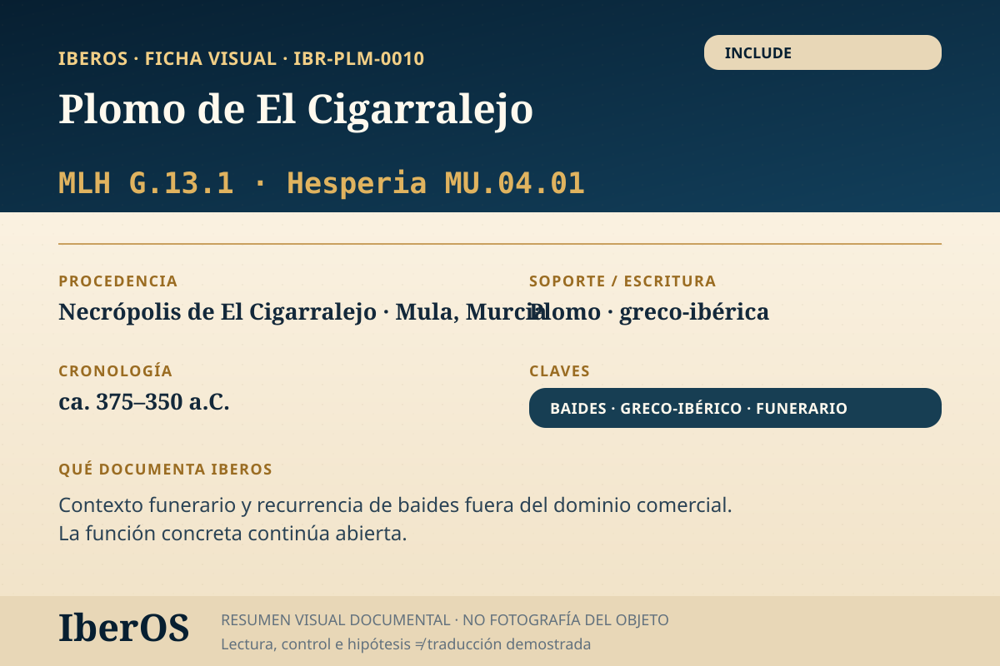

Ficha indexable · IBR-PLM-0010
Plomo de El Cigarralejo
Contexto funerario; baides recurrente fuera del dominio comercial. Función ri...

Qué documenta IberOS
Contexto funerario; baides recurrente fuera del dominio comercial. Función ri...
Incluido en el corpus de trabajo. Su uso interpretativo conserva los niveles de incertidumbre del registro.
Cautela científica: transliteración, segmentación o semejanza formal no equivalen a una traducción demostrada.
Trazabilidad metodológica
Módulos: PALEO · TRACE · MORPH · LEXSEM · GRECO_LOCK.
Dependencia: INDEPENDENT_OR_UNRESOLVED.
Entrada: ONE_OR_FEW_ENTRIES.
Fuente y bibliografía
Fuente principal: https://museosregiondemurcia.carm.es/web/museo-de-arte-iberico-el-cigarralejo...
Archivo IberOS: IberOS_CaseStudies_Objeto_IBR-PLM-0010_Cigarralejo_v1.0.pdf.